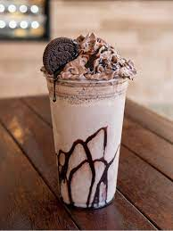

oreo shake

This oreo milkshake recipe should be on the summer menu of everyone who loves thick and creamy beverages. If you are looking for a super easy milkshake recipe, try this oreo shake recipe! Made with Oreo cookies, milk, vanilla ice cream, sugar, and chocolate sauce, this thick oreo shake recipe will take over your taste buds
Ingredients
- 1 pint vanilla ice cream
- 1 cup milk
- 8 Oreo cookies
- 1 tablespoon chocolate sauce
- 2 Oreo cookies, garnish
Recipe instructions (taken from the book)
- Gather the ingredients.
- Place the vanilla ice cream, milk, 8 Oreo cookies, and the chocolate sauce in a blender and puree until smooth.
- Crush the remaining 2 Oreo cookies for the garnish by placing them in a zip-close plastic bag and pounding on them a few times with a rolling pin until they crumble.
- Pour the milkshakes into 2 tall glasses and top each with the crushed Oreo cookie crumbs. Garnish with a straw.
Return to top
Return to main page